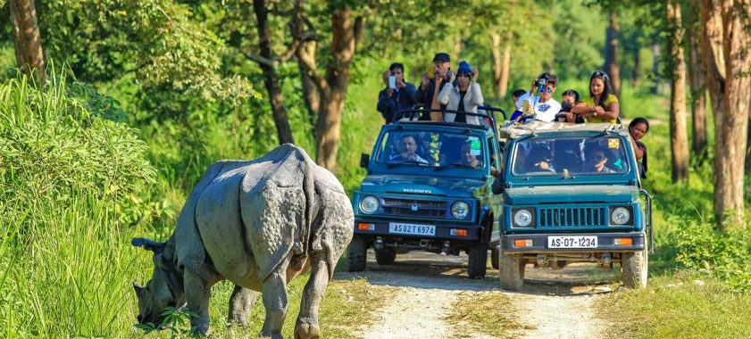

Kaziranga Elephant Safari Charges to Rise After a Decade, Online Booking Planned
By Kaziranga National Park

Kaziranga National Park, Assam: Elephant safari enthusiasts planning a visit to Kaziranga may soon see changes in safari charges and booking procedures. The Assam Forest Department has announced plans to revise the charges for both jeep and elephant safaris after more than a decade. The proposed changes are expected to come into effect with the upcoming tourism season, although the revised elephant safari fees and detailed booking arrangements are yet to be officially announced. According to recent reports, the Forest Department is also working on a digital platform that will allow tourists to book safari permits and make payments online.
Elephant Safari Remains a Popular Kaziranga Experience
Elephant safari continues to be one of the most sought-after wildlife experiences in Kaziranga National Park. Unlike a jeep safari, an elephant safari allows visitors to travel through tall grasslands and areas where vegetation can make wildlife observation from a vehicle more difficult. Kaziranga is internationally known for its population of the greater one-horned rhinoceros, while its grasslands, wetlands and forests also support wild elephants, swamp deer, wild water buffalo, deer, wild boar and numerous bird species. For many visitors an elephant safari offers a different perspective of Kaziranga's landscape and wildlife.
Safari Fees Have Remained Unchanged for More Than 10 Years
According to Assam Forest Minister Jayanta Mallabaruah, elephant and jeep safari charges have not been revised for around 10 to 11 years. The proposed fee revision is intended to reflect current operating costs and help improve tourism facilities and visitor services. Kaziranga welcomed approximately 4.7 lakh tourists during the 2025–26 tourism season, highlighting the growing demand for wildlife tourism in the national park. The park has also witnessed increased interest from international visitors.
One of the important changes planned by the Forest Department is the introduction of an online booking platform. The proposed system is expected to allow tourists to reserve jeep and elephant safaris and complete payments digitally. A transparent online system could make the booking process more convenient while helping authorities better manage tourist numbers and safari operations. The exact launch date, booking procedure, safari quota and revised elephant safari charges have not yet been announced. Visitors should therefore check the latest official information before making travel plans.
Focus on Responsible Wildlife Tourism in Kaziranga
The proposed changes come as Kaziranga prepares to strengthen tourism management while maintaining its conservation priorities. Authorities are also planning tighter implementation of tourism regulations including measures related to visitor numbers, trained guides and restrictions on electronic devices in certain areas of the park. The Forest Department has stated that increased tourism revenue can help support conservation, habitat management and local communities. The challenge will be to balance growing tourist demand with the ecological needs of Kaziranga's wildlife.
Elephant Safari and Elephant Welfare Association
Elephant safaris also bring an important responsibility: ensuring the health and welfare of the elephants involved. Earlier this year, the death of a 50-year-old safari elephant named Swarnamoyee in Kaziranga raised questions about the working conditions and welfare of elephants used for tourism. Reports noted that safari elephants undergo veterinary screening, while conservationists and wildlife experts have also stressed the importance of proper nutrition, rest, veterinary care and trained mahouts. Responsible wildlife tourism should therefore focus not only on providing visitors with memorable experiences but also on maintaining high standards of animal welfare.
Plan Your Kaziranga Elephant Safari
With revised safari charges and an online booking system being planned, visitors should keep an eye on official announcements before booking their Kaziranga trip. If you are planning to experience Kaziranga from the back of an elephant, advance planning will be particularly important because elephant safari seats are limited compared with jeep safari capacity.
Frequently Asked Questions
Are Kaziranga elephant safari charges being increased?
Yes. The Assam Forest Department has announced plans to revise elephant safari and jeep safari charges after more than a decade. The final revised rates are yet to be announced.
Will Kaziranga introduce online elephant safari booking?
The Forest Department is planning a digital platform for online booking and payment for jeep and elephant safaris. Details of the system are expected to be announced separately.
Why are elephant safari charges being revised?
The proposed revision is intended to bring safari fees in line with current operational costs and support better visitor facilities, tourism management and conservation.
Is elephant safari available throughout the year?
No. Kaziranga's main tourism season is seasonal, and elephant safari operations can be affected by weather, flooding, park conditions and forest department decisions.
What animals can be seen during an elephant safari?
The one-horned rhinoceros is one of the main attractions. Visitors may also encounter deer, wild water buffalo, wild elephants and various bird species. Tiger sightings are possible but cannot be guaranteed.
Should I book my elephant safari in advance?
Yes. Elephant safari capacity is limited, so advance booking is recommended once the official booking window opens.